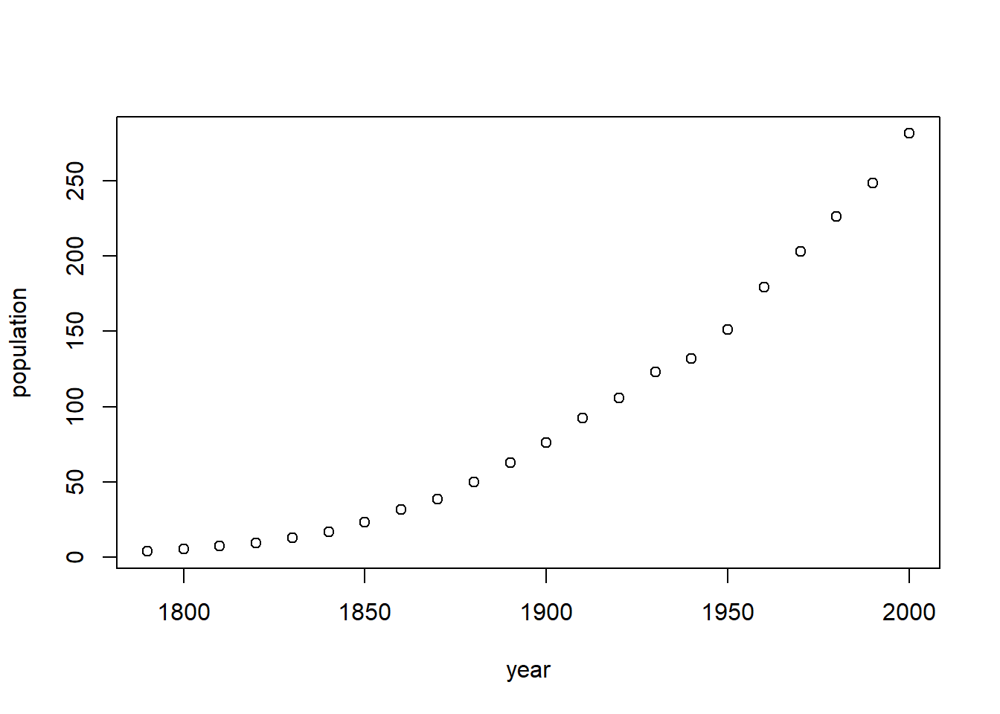
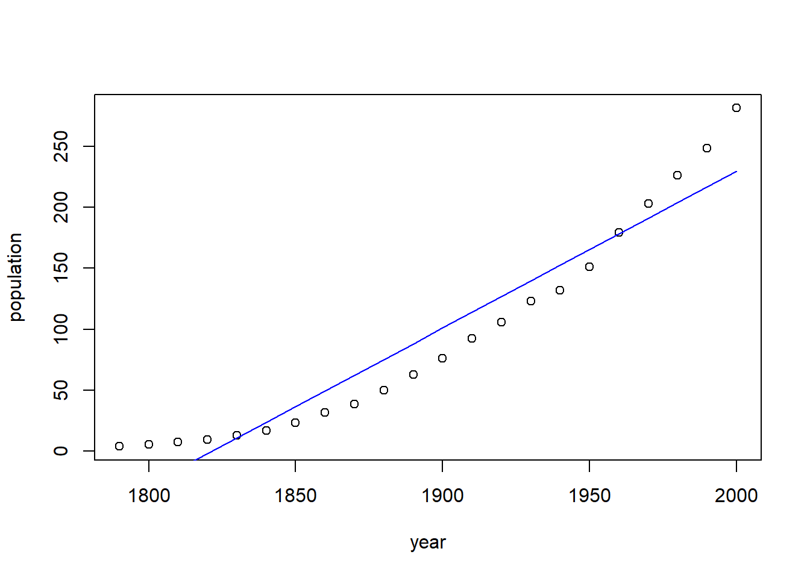
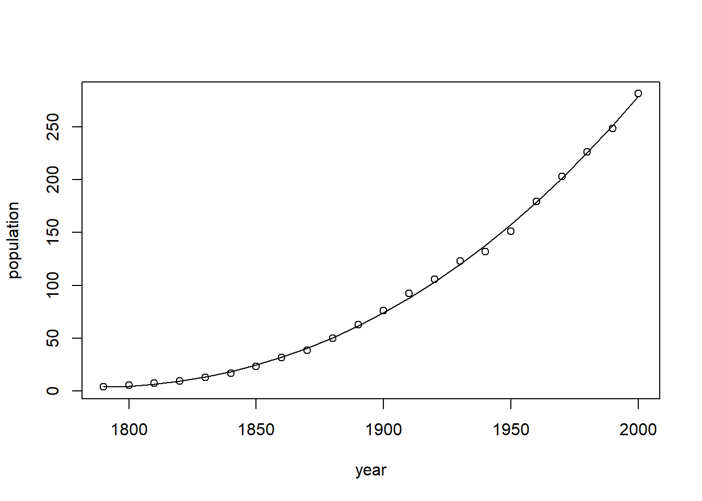
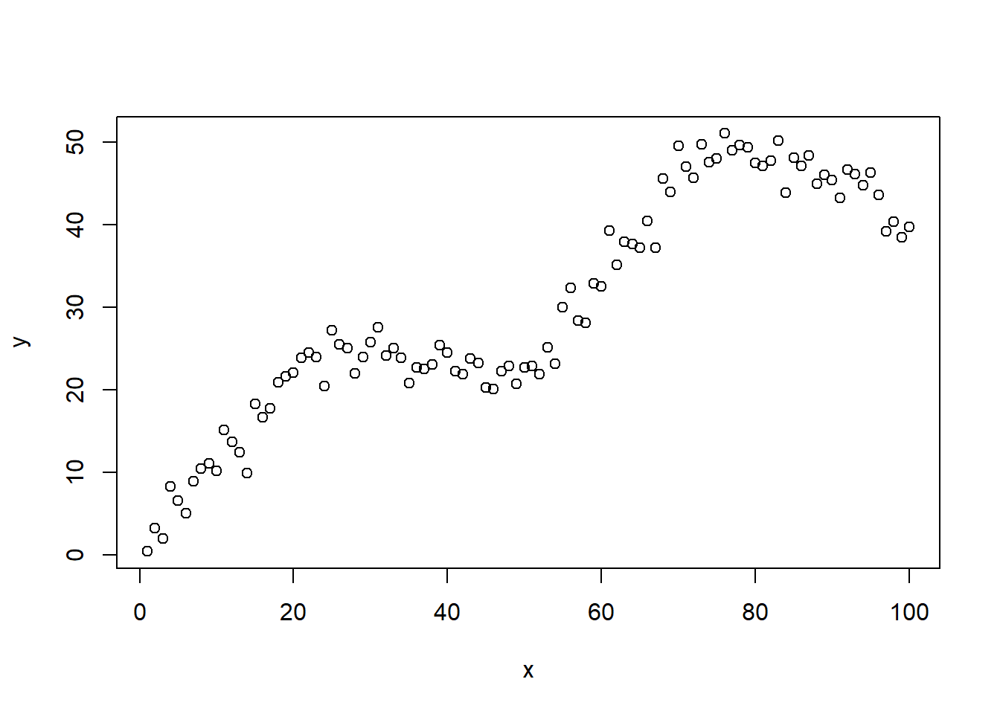
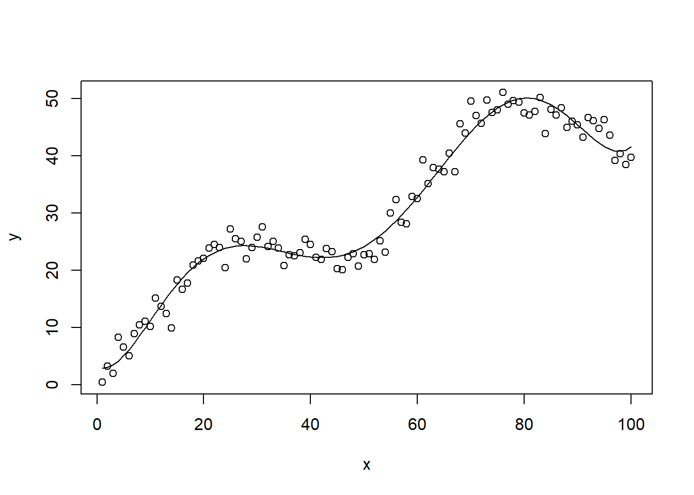
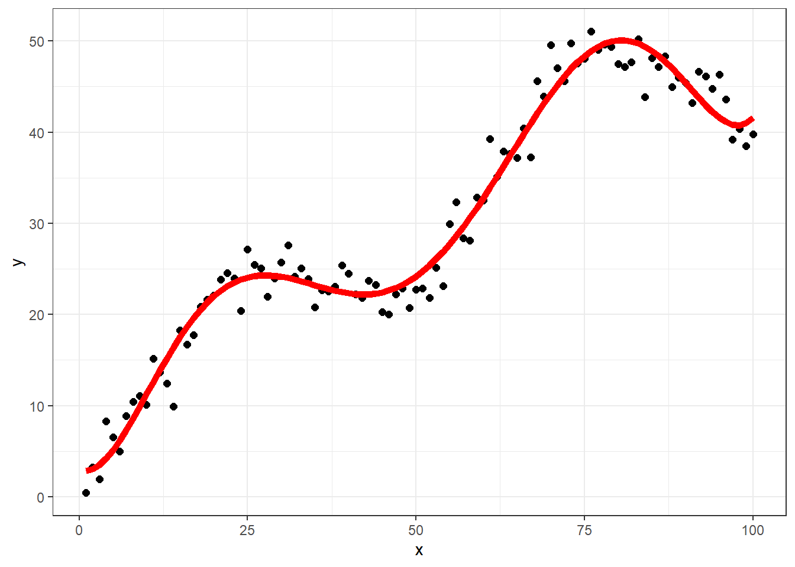

# 加载数据
library(car)
data("USPop")
psych::headTail(USPop)
## year population
## 1 1790 3.93
## 2 1800 5.31
## 3 1810 7.24
## 4 1820 9.64
## ... ... ...
## 19 1970 203.3
## 20 1980 226.54
## 21 1990 248.71
## 22 2000 281.4232 R语言多项式拟合
前面用了2篇推文，帮大家梳理了从线性拟合到非线性拟合的常用方法，包括多项式回归、分段回归、样条回归、限制性立方样条回归，以及它们之间的区别和联系，详情请看：
今天用R语言实操。
32.1 多项式拟合
我们用car包里面的USPop数据集进行演示。这个数据集一共两列，一列是年份，另一列是美国每一年的人口数量，数据一共22行。
我们首先画图看看两列数据的情况：
plot(population ~ year, data = USPop)
这个数据很明显是曲线的形状，并不是一条直线，所以此时我们直接用线性回归（直线）拟合这样的数据是不合适的。不信我们可以画图看看。
# 拟合线性回归
f <- lm(population ~ year, data = USPop)
# 画出原来的数据
plot(population ~ year, data = USPop)
# 添加拟合线
lines(USPop$year, fitted(f), col = "blue")
图中这条蓝色的线就是线性拟合的线，很明显，对数据的拟合很差。
那我们应该用什么方法拟合这个关系呢？
根据之前的两篇推文，拟合非线性关系有非常多的方法，至少有3种：
- 多项式回归
- 分段回归
- 样条回归
我们这里先介绍多项式回归。
多项式回归非常简单，就是个高中学过的高次方程的曲线。
现在我们先拟合一个二次项的多项式回归：
# 2次项，注意用法
f1 <- lm(population ~ year + I(year^2), data = USPop)
# 画出拟合线
plot(population ~ year, data = USPop)
lines(USPop$year, fitted(f1))结果拟合很好，二次项就已经拟合效果非常好了，如果你还想看一下更高次项拟合，可以继续试试，比如3次项：
# 3次项，注意用法
f2 <- lm(population ~ year + I(year^2) + I(year^3), data = USPop)
# 画出拟合线
plot(population ~ year, data = USPop)
lines(USPop$year, fitted(f2))
结果可见增加了一个3次项，结果并没有好很多。所以我们可以就选2次项即可。
当然也有一些统计方法可以检验，加了2次项、3次项之后是不是有统计学意义，可以用似然比检验，比如anova：
# 线性回归和2次项比较
anova(f, f1)
## Analysis of Variance Table
##
## Model 1: population ~ year
## Model 2: population ~ year + I(year^2)
## Res.Df RSS Df Sum of Sq F Pr(>F)
## 1 20 12819.0
## 2 19 170.7 1 12648 1408.1 < 2.2e-16 ***
## ---
## Signif. codes: 0 '***' 0.001 '**' 0.01 '*' 0.05 '.' 0.1 ' ' 1
# 2次项和3次项比较
anova(f1, f2)
## Analysis of Variance Table
##
## Model 1: population ~ year + I(year^2)
## Model 2: population ~ year + I(year^2) + I(year^3)
## Res.Df RSS Df Sum of Sq F Pr(>F)
## 1 19 170.66
## 2 18 143.64 1 27.027 3.3868 0.08227 .
## ---
## Signif. codes: 0 '***' 0.001 '**' 0.01 '*' 0.05 '.' 0.1 ' ' 1结果很明显，加入2次项之后，P值是小于0.05的，说明是有统计学意义的，但是2次项和3次项比较，就没有统计学意义了，说明我们只要用到2次项即可。
在写论文的时候应该如何描述这些方法呢？请多看文献，这不在本文的讨论范围。
为了加深理解，下面再给大家举一个例子。
首先是构造一个数据，构造数据的过程不需要看。
x <- 1:100
k <- c(25, 50, 75)
u <- function(x)ifelse(x > 0, x, 0)
x2 <- u(x - k[1])
x3 <- u(x - k[2])
x4 <- u(x - k[3])
set.seed(1)
y <- 0.8 + 1*x + -1.2*x2 + 1.4*x3 + -1.6*x4 + rnorm(100,sd = 2.2)
plot(x, y)
这样的一个数据，很明显也不是线性的，所以此时线性回归肯定不合适。我们尝试用多项式回归来拟合这个数据。
这个数据，我已经帮大家试好了，需要拟合6次项才会比较完美。
# 拟合6次项
f.6 <- lm(y ~ x + I(x^2) + I(x^3) + I(x^4) + I(x^5) + I(x^6))
# 画出拟合线
plot(x,y)
lines(x, fitted(f.6))
可以看到拟合线比较贴合数据。但是在拟合线的开头和末尾可以发现有点上翘的趋势，这也是多项式拟合的缺点，如果此时在两头多点数据，可能拟合效果就不是很好了。解决方法也很简单，就是我们下次要介绍的样条回归。
多项式回归的公式写法像上面这样略显复杂，如果是更高次的项，岂不是更复杂？当然是有简便写法的。可以使用poly()函数。
# 多项式拟合的简便写法，拟合6次项，和上面结果完全一样
f.6 <- lm(y ~ poly(x, 6))
# 画出拟合线
plot(x,y)
lines(x, fitted(f.6))
可以看到使用poly()函数极大的简化了公式写法，而且很好理解，后面的数字就代表了次方。看到这里，不知道你有没有想起重复测量数据的多重比较中用过的正交多项式呢？没有印象的赶紧去复习下：重复测量数据的多重比较
这样的拟合线，当然也是可以用ggplot2画的。
library(ggplot2)
ggplot()+
geom_point(aes(x,y),size=2)+
geom_line(aes(x, fitted(f.6)), color="red",size=2)+
theme_bw()
## Warning: Using `size` aesthetic for lines was deprecated in ggplot2 3.4.0.
## ℹ Please use `linewidth` instead.
或者下面这样，好理解，还可以添加可信区间：
df.tmp <- data.frame(x = x, y= y)
ggplot(df.tmp, aes(x,y))+
geom_point(size=2)+
geom_smooth(method = "lm",
formula = y ~ poly(x,6),
color="red",
size=2,
se = T, # 可信区间
)+
theme_bw()最后一个问题：多项式能用于逻辑回归吗？Cox回归呢？
当然可以了，只是把自变量变成多次项而已，和lm用法一模一样，函数使用glm()/coxph()等即可！